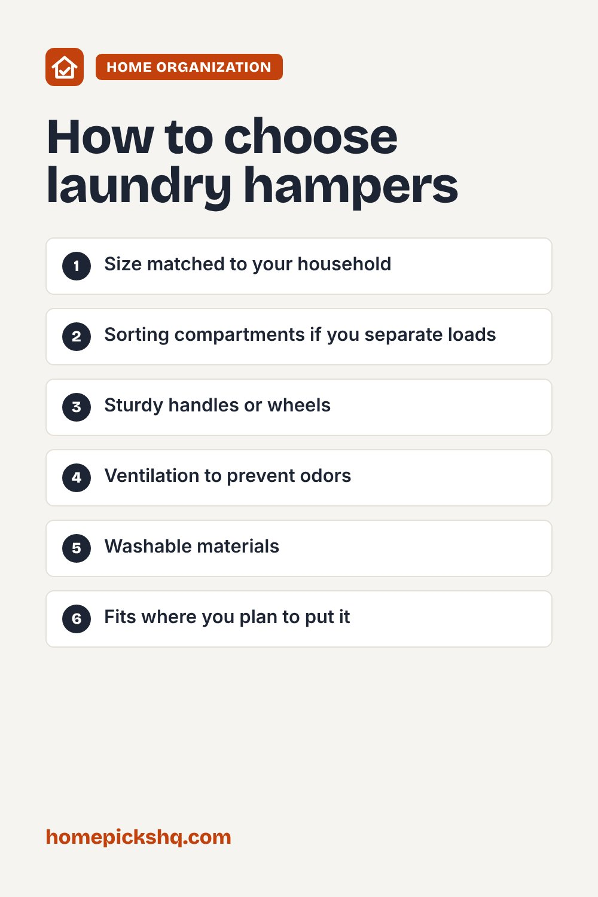

Best Laundry Hampers: Sizes, Styles, and Features

How we write these guides: we research manufacturer specifications, expert guidance, and owner feedback. We do not claim to have lab-tested every product. Links to Amazon on this page are affiliate links; see our disclosure.
A laundry hamper seems simple, but the right one makes laundry day easier and keeps clothes from piling on the floor. Size, sorting options, and ease of carrying all matter. Here is how to choose.
Browse laundry hampers on Amazon
Choose the right size
A single hamper that holds roughly one load is a good start for one person. Families often do better with larger or multiple hampers. Capacity is often listed in liters or bushels. A taller, narrower hamper takes less floor space, while a wider one holds more.
Sorting hampers
Two or three compartments let you separate whites, colors, and delicates as you go, which saves time on laundry day. Removable bags can be lifted out and carried straight to the washer.
Rolling and carrying
Hampers with wheels are convenient for large households and long walks to the laundry room. Look for sturdy handles and a design that is easy to lift when full. Collapsible hampers fold flat for small spaces or travel.
Ventilation and odor
Mesh or slatted sides let air circulate, which helps prevent musty smells. A lid hides clutter and contains odors, but make sure damp items are not stored inside for long, since moisture can cause mildew.
Materials
Fabric and mesh hampers are lightweight and washable. Woven baskets look nice but can be bulky. Plastic is easy to wipe clean. Stable frames keep the hamper from tipping when full.
Quick buying checklist
- Size matched to your household
- Sorting compartments if you separate loads
- Sturdy handles or wheels
- Ventilation to prevent odors
- Washable materials
- Fits where you plan to put it
See laundry hampers on AmazonUse the checklist above to compare options. As an Amazon Associate I earn from qualifying purchases.

Frequently asked questions
How big should a hamper be?
Choose one that holds at least one full load, and more if you wash less often.
Can I put wet clothes in a hamper?
It is better to avoid it because dampness can lead to mildew.
How do I clean a hamper?
Wash fabric liners according to the label, and wipe plastic with soapy water.